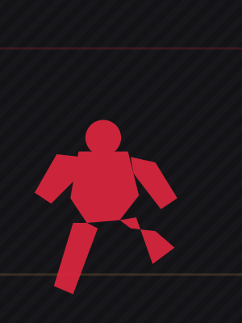

From Contender Series to the cusp of the top 10
Five straight wins, two of them over names with real name recognition — Malott's resume stopped being a surprise a while ago.
9 min readOct 2026
Mike Malott's career arc — from a 36-second regional title win to a five-fight UFC streak that's turned "Proper" into a legitimate welterweight contender.

From a regional knockout title and a Contender Series submission to a UFC résumé that now includes Kevin Holland and Gilbert Burns — mapped fight by fight.

Turned pro with a first-round submission, then rebounded from a loss to Hakeem Dawodu by winning the vacant XFFC Lightweight title in 36 seconds.
Submitted Shimon Smotritsky on Season 5 of Dana White's Contender Series to earn his shot.
Opened his UFC run with a TKO of Mickey Gall and submissions of Yohan Lainesse and Adam Fugitt, before a TKO loss to Neil Magny.
Decisioned Trevin Giles, knocked out Charles Radtke, then scored the biggest win of his career to that point over veteran Kevin Holland.
Stopped Gilbert Burns by strikes, then flattened Joaquin Buckley with a knee in front of his home crowd in Edmonton — five straight, and a move toward the top 10.
Five straight wins, two of them over names with real name recognition — Malott's resume stopped being a surprise a while ago.
A career built entirely on knockouts ran into a fighter who could end things just as fast.
Malott's finishing instincts didn't start in the UFC — they just found a bigger stage.
Coaching adjustments and in-fight reads that shaped these career turns.
Read Corner Notes